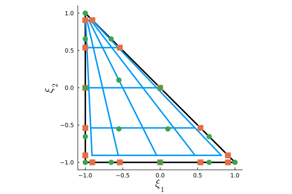

Modules
ConservationLaws
The equations to be solved are defined by subtypes of AbstractConservationLaw on which functions such as physical_flux and numerical_flux are dispatched. Objects of type AbstractConservationLaw contain two type parameters, d and PDEType, the former denoting the spatial dimension of the problem, which is inherited by all subtypes, and the latter being a subtype of AbstractPDEType denoting the particular type of PDE being solved, which is either FirstOrder or SecondOrder. Whereas first-order problems remove the dependence of the flux tensor on the solution gradient in order to obtain systems of the form
\[\partial_t \underline{U}(\bm{x},t) + \bm{\nabla}_{\bm{x}} \cdot \underline{\bm{F}}(\underline{U}(\bm{x},t)) = \underline{0},\]
second-order problems are treated by CLOUD.jl as first-order systems of the form
\[\begin{aligned} \underline{\bm{Q}}(\bm{x},t) - \bm{\nabla}_{\bm{x}} \underline{U}(\bm{x},t) &= \underline{0},\\ \partial_t \underline{U}(\bm{x},t) + \bm{\nabla}_{\bm{x}} \cdot \underline{\bm{F}}(\underline{U}(\bm{x},t), \underline{\bm{Q}}(\bm{x},t)) &= \underline{0}. \end{aligned}\]
CLOUD.jl also supports source terms of the form $\underline{S}(\bm{x},t)$, specifically for code verification using the method of manufactured solutions. A (partial) list of subtypes of AbstractConservationLaw is provided below.
CLOUD.ConservationLaws.LinearAdvectionEquation — TypeLinearAdvectionEquation(a::NTuple{d,Float64}) where {d}Define a linear advection equation of the form
\[\partial_t U(\bm{x},t) + \bm{\nabla} \cdot \big( \bm{a} U(\bm{x},t) \big) = 0,\]
with a constant advection velocity $\bm{a} \in \R^d$. A specialized constructor LinearAdvectionEquation(a::Float64) is provided for the one-dimensional case.
CLOUD.ConservationLaws.LinearAdvectionDiffusionEquation — TypeLinearAdvectionDiffusionEquation(a::NTuple{d,Float64}, b::Float64) where {d}Define a linear advection-diffusion equation of the form
\[\partial_t U(\bm{x},t) + \bm{\nabla} \cdot \big( \bm{a} U(\bm{x},t) - b \bm{\nabla} U(\bm{x},t)\big) = 0,\]
with a constant advection velocity $\bm{a} \in \R^d$ and diffusion coefficient $b \in \R^+$. A specialized constructor LinearAdvectionDiffusionEquation(a::Float64, b::Float64) is provided for the one-dimensional case.
SpatialDiscretizations
Discretizations in CLOUD.jl are constructed by first building a local approximation on a canonical reference element, denoted generically as $\hat{\Omega} \subset \mathbb{R}^d$, and using a bijective transformation $\bm{X}^{(\kappa)} : \hat{\Omega} \rightarrow \Omega^{(\kappa)}$ to construct the approximation on each physical element of the mesh $\mathcal{T}^h = \{ \Omega^{(\kappa)}\}_{\kappa \in \{1:N_e\}}$ in terms of the associated operators on the reference element. In order to define the different geometric reference elements, existing subtypes of AbstractElemShape from StartUpDG.jl (e.g. Line, Quad, Hex, Tri, and Tet) are used and re-exported by CLOUD.jl. For example, we have
\[\begin{aligned} \hat{\Omega}_{\mathrm{line}} &= [-1,1],\\ \hat{\Omega}_{\mathrm{quad}} &= [-1,1]^2,\\ \hat{\Omega}_{\mathrm{hex}} & = [-1,1]^3, \\ \hat{\Omega}_{\mathrm{tri}} &= \big\{ \bm{\xi} \in [-1,1]^2 : \xi_1 + \xi_2 \leq 0 \big\},\\ \hat{\Omega}_{\mathrm{tet}} &= \big\{ \bm{\xi} \in [-1,1]^3 : \xi_1 + \xi_2 + \xi_3 \leq 0 \big\}. \end{aligned}\]
These element types are used in the constructor for CLOUD.jl's ReferenceApproximation type, along with a subtype of AbstractApproximationType specifying the nature of the local approximation (and, optionally, the associated volume and facet quadrature rules). As an example, we can construct a collapsed-edge tensor-product spectral-element method of degree $p=4$ on the reference triangle by first loading the CLOUD.jl package and then using the appropriate constructor:
julia> using CLOUD
julia> reference_approximation = ReferenceApproximation(NodalTensor(4), Tri(),
mapping_degree=4, quadrature_rule=(LGQuadrature(), LGQuadrature()))Note that we have used the optional keyword argument mapping_degree to define a degree $l = 4$ multidimensional Lagrange basis to represent the geometric transformation $\bm{X}^{(\kappa)} \in [\mathbb{P}_l(\hat{\Omega})]^d$, where by default an affine mapping is used, corresponding to $l = 1$. Moreover, the keyword argument quadrature_rule has been used to specify a Legendre-Gauss quadrature rule with $p+1$ nodes in each direction. Using CLOUD.jl's built-in plotting recipes, we can easily visualize the reference element for such a discretization:
julia> using Plots
julia> plot(reference_approximation, grid_connect=true, markersize=6, linewidth=3)
In the above, the blue grid lines are used to represent the tensor-product volume quadrature rule, the orange squares represent facet/mortar quadrature nodes, and the green circles represent the Lagrange interpolation nodes used to define the mapping.
All the information used to define the spatial discretization on the physical domain $\Omega$ is contained within a SpatialDiscretization structure, which is constructed using a ReferenceApproximation and a MeshData from StartUpDG.jl, which are stored as the fields reference_approximation and mesh. When the constructor for a SpatialDiscretization is called, the grid metrics are computed and stored in a GeometricFactors structure, with the corresponding field being geometric_factors. CLOUD.jl provides utilities to easily generate uniform periodic meshes on line segments, rectangles, or rectangular prisms; using such a mesh and reference_approximation defined previously, we can construct a spatial discretization on the domain $\Omega = [0,1] \times [0,1]$ with four edges in each direction (a total of $N_e = 32$ triangular elements) as shown below:
julia> mesh = uniform_periodic_mesh(reference_approximation.reference_element,
((0.0, 1.0),(0.0,1.0), (4,4)))
julia> spatial_discretization = SpatialDiscretization(mesh,
reference_approximation.reference_element)Note that the field reference_element is of type RefElemData from StartUpDG, and is used to store geometric information about the reference element and to define the operators used in constructing the polynomial mapping; the operators used for the discretizations are defined separately according to the specific scheme (e.g. NodalTensor in this case).